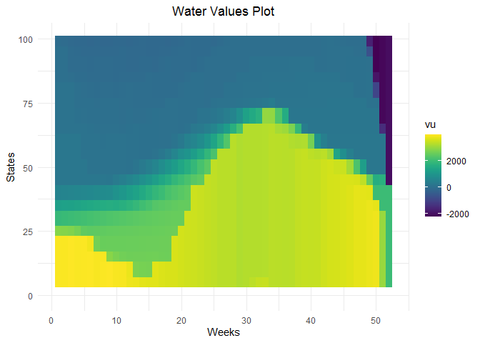
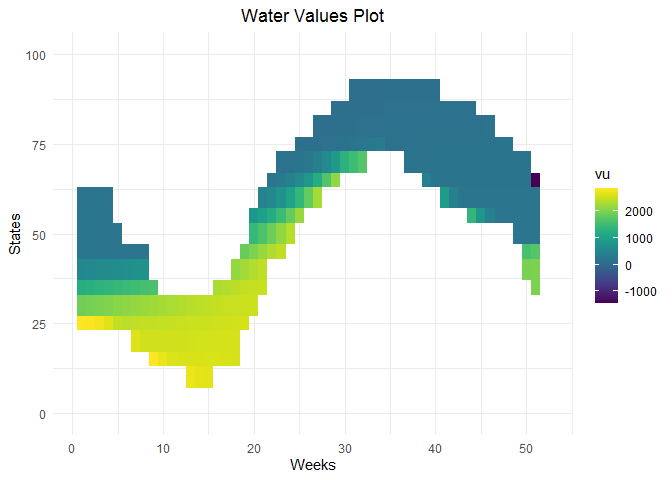
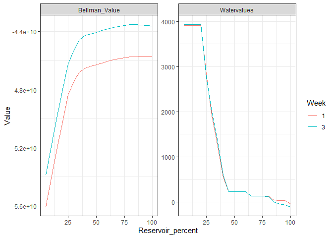
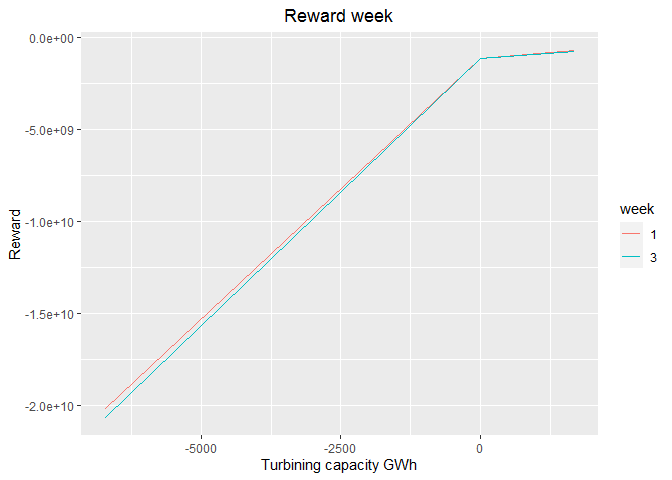
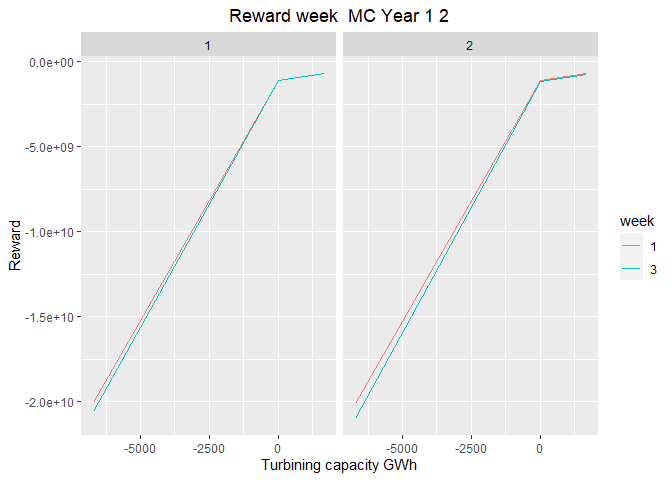
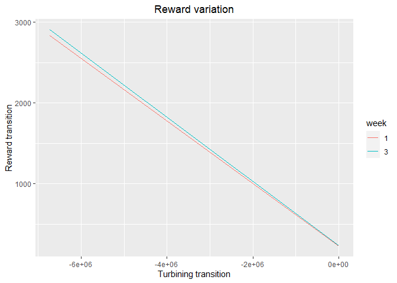
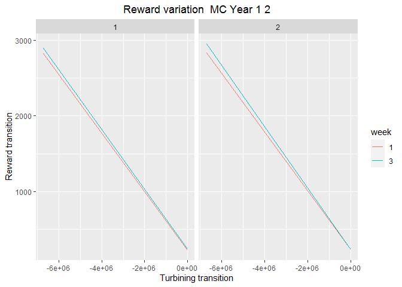

antaresWaterValues calculates water values for long-term storages in Antares studies. The package performs Antares simulations and dynamic programming approaches.
More theoretical details are available in the vignette: vignette("computation_watervalues").
Methods Overview
| Number of stocks | Multistock method | Classic reward function (Classic Antares calls) |
Iterative reward function (Classic Antares calls) |
Classic reward function (PLAIA) |
Full PLAIA (reward + Bellman) |
|---|---|---|---|---|---|
| Single stock | – |
runWaterValuesSimulation() +get_Reward() +Grid_Matrix()
|
calculateBellmanWithIterativeSimulations() |
getBellmanValuesSequentialMultiStockWithPlaia() |
getBellmanValuesWithPlaia() |
| Multiple stocks | Sequential | Not available (would require too many simulations) | calculateBellmanWithIterativeSimulationsMultiStock() |
getBellmanValuesSequentialMultiStockWithPlaia() |
getBellmanValuesWithPlaia() |
| Multiple stocks | Simultaneous (Global) | getBellmanValuesFromOneSimulationMultistock() |
— | — | — |
Legend
- Classic reward function: The reward function is computed by running multiple Antares simulations, each corresponding to a different control (i.e., different storage level variations during a week, without considering natural inflows). This approach can be time-consuming.
- Iterative reward function: Antares simulations are chosen iteratively to maximize efficiency. At each step, the controls to be evaluated are selected using the current estimation of the reward function and Bellman values. After every new simulation, the reward function is updated, reducing the total number of runs required.
- PLAIA: The reward function is computed efficiently using PLAIA, which keeps the optimization problems in memory and modifies only the constraint (right-hand side) corresponding to the control. This drastically reduces computation time compared to classic Antares calls.
- Full PLAIA: Both the computation of the reward function and the Bellman recursion are handled internally by PLAIA, providing maximal efficiency.
Installation
# Install from GitHub
# install.packages("devtools")
devtools::install_github("rte-antares-rpackage/antaresWaterValues@*release") Getting Started
Make sure you have a backup of your Antares study. The package edits and resets the Antares study, but we recommend saving a copy before your first use. For troubleshooting, check package dependencies listed in DESCRIPTION.
Important: Use the Antares hydro heuristic for all storages when computing Bellman values.
Usage
1. With the Shiny app
opts = antaresRead::setSimulationPath("your/path/to/the/antares/study", "input")
shiny_water_values(opts)2. Scripting without the Shiny app
a. Setup your study
opts <- antaresRead::setSimulationPath("your/path/to/the/antares/study", "input")b. Set parameters
area <- "area"
pumping <- TRUE # TRUE if pumping is possible
mcyears <- 1:3 # Monte Carlo years to use
efficiency <- getPumpEfficiency(area, opts = opts)
name = "3sim"c. Run simulations
simulation_res <- runWaterValuesSimulation(
area = area,
nb_disc_stock = 3, # Number of simulations
mcyears = mcyears,
path_solver = "your/path/to/antares/bin/antares-8.6-solver.exe",
opts = opts,
file_name = name,
pumping = pumping,
efficiency = efficiency
)e. Compute reward functions
reward_db <- get_Reward(
simulation_names = simulation_res$simulation_names,
simulation_values = simulation_res$simulation_values,
opts = opts,
area = area,
mcyears = mcyears,
efficiency = efficiency,
method_old = TRUE, # TRUE for linear interpolation; FALSE for marginal price
possible_controls = constraint_generator(
area = area,
nb_disc_stock = 20,
mcyears = mcyears,
pumping = pumping,
efficiency = efficiency,
opts = opts
)
)
reward <- reward_db$rewardf. Compute water values
results <- Grid_Matrix(
area = area,
reward_db = reward_db,
mcyears = mcyears,
states_step_ratio = 1/20, # State discretization
opts = opts,
efficiency = efficiency,
penalty_low = 1000, # Penalty for bottom rule curve
penalty_high = 100, # Penalty for top rule curve
force_final_level = TRUE, # Constraint on final level
final_level = get_initial_level(area = area, opts = opts), # Target final level (0-100%)
penalty_final_level_low = 2000,
penalty_final_level_high = 2000
)
aggregated_results <- results$aggregated_resultsg. Write results to Antares
reshaped_values <- aggregated_results %>% to_Antares_Format_bis()
antaresEditObject::writeWaterValues(
area = area,
data = reshaped_values
)Note: Values in reshaped_values may not be monotone because Antares averages values.
h. Make sure hydro-pricing-mode is set to accurate
settings_ini <- antaresRead::readIni(file.path("settings", "generaldata.ini"), opts = opts)
settings_ini$`other preferences`$`hydro-pricing-mode` <- "accurate"
antaresEditObject::writeIni(settings_ini, file.path("settings", "generaldata.ini"), overwrite = TRUE, opts = opts)Plotting Results
# Water values visualization
waterValuesViz(Data = aggregated_results, filter_penalties = TRUE)
# Plot Bellman
plot_Bellman(value_nodes_dt = aggregated_results, weeks_to_plot = c(1,3))
# Reward functions
plot_1 <- plot_reward(reward_base = reward, weeks_to_plot = c(1,3))
plot_2 <- plot_reward_mc(reward_base = reward, weeks_to_plot = c(1,3), scenarios_to_plot = c(1,2))
plot_3 <- plot_reward_variation(reward_base = reward, weeks_to_plot = c(1,3))
plot_4 <- plot_reward_variation_mc(reward_base = reward, weeks_to_plot = c(1,3), scenarios_to_plot = c(1,2))
Troubleshooting & Help
- For more info, see the package reference documentation.
- Report bugs or request help by creating an issue.